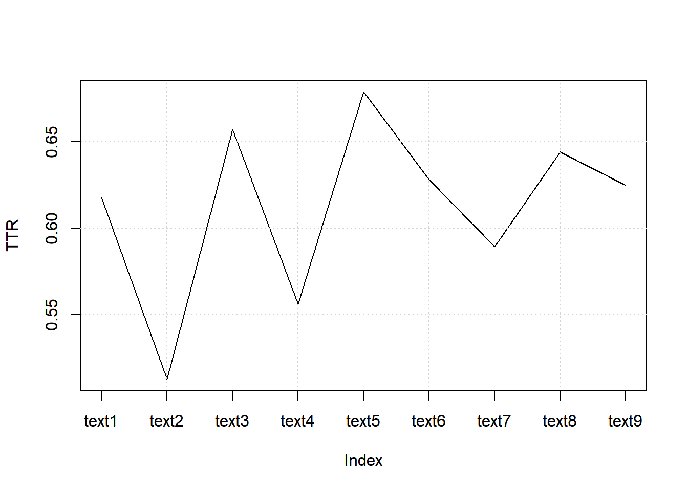
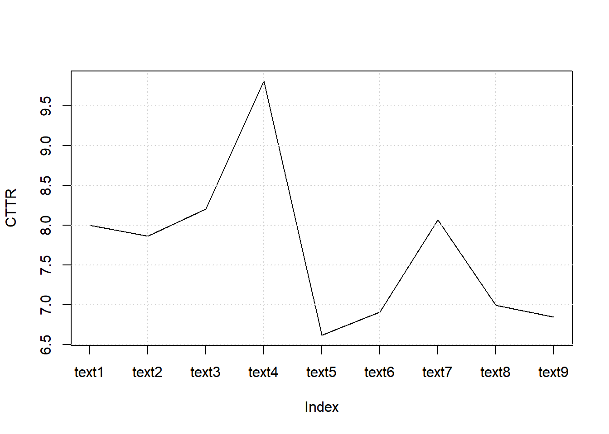
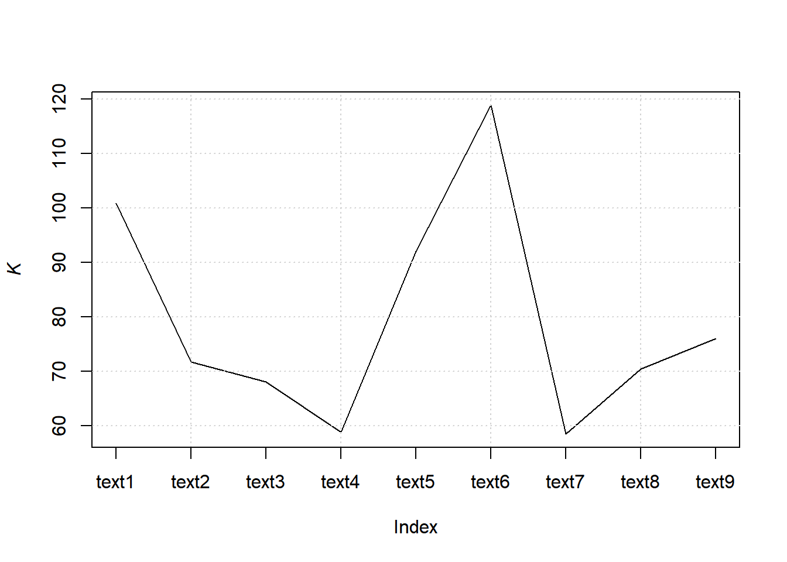
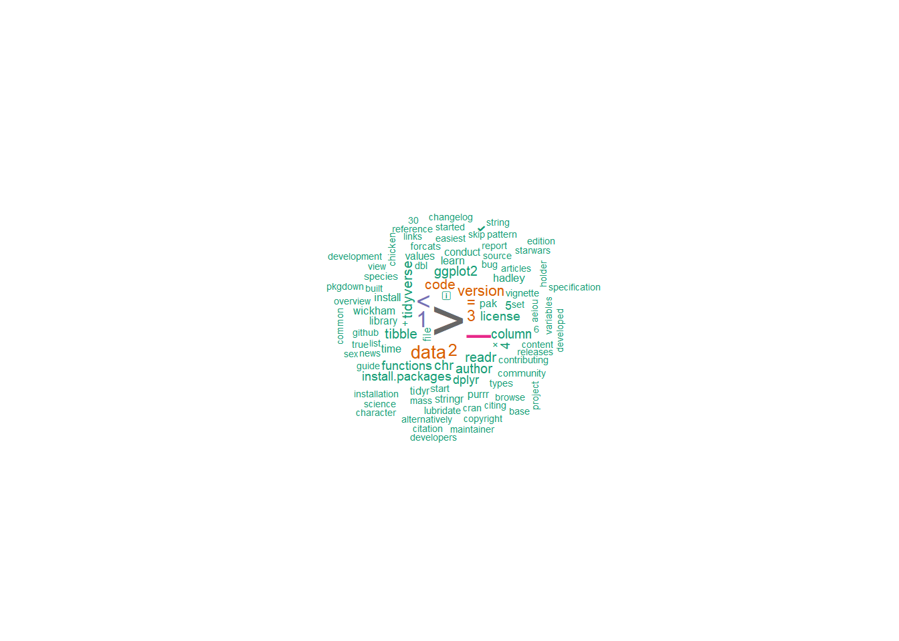
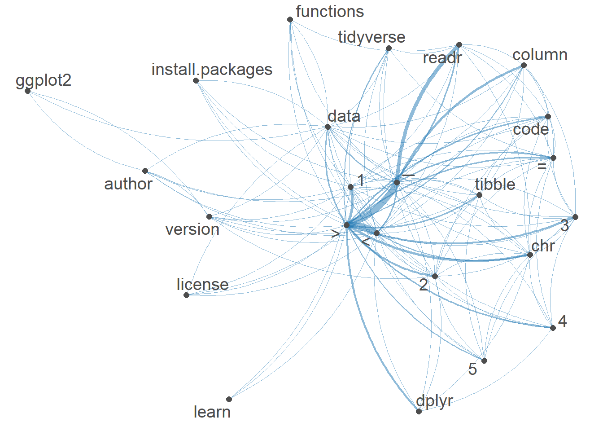

8.9 Multiple webpages
8.9.1 Read_html
## {html_document}
## <html>
## [1] <head>\n<meta http-equiv="Content-Type" content="text/html; charset=UTF-8 ...
## [2] <body>\n <div id="appTidyverseSite" class="shrinkHeader alwaysShrinkHe ...## {xml_nodeset (9)}
## [1] <a href="https://ggplot2.tidyverse.org/" target="_blank">\n <img class ...
## [2] <a href="https://dplyr.tidyverse.org/" target="_blank">\n <img class=" ...
## [3] <a href="https://tidyr.tidyverse.org/" target="_blank">\n <img class=" ...
## [4] <a href="https://readr.tidyverse.org/" target="_blank">\n <img class=" ...
## [5] <a href="https://purrr.tidyverse.org/" target="_blank">\n <img class=" ...
## [6] <a href="https://tibble.tidyverse.org/" target="_blank">\n <img class= ...
## [7] <a href="https://stringr.tidyverse.org/" target="_blank">\n <img class ...
## [8] <a href="https://forcats.tidyverse.org/" target="_blank">\n <img class ...
## [9] <a href="https://lubridate.tidyverse.org/" target="_blank">\n <img cla ...8.9.2 Extract headline
## [1] "https://ggplot2.tidyverse.org/" "https://dplyr.tidyverse.org/"
## [3] "https://tidyr.tidyverse.org/" "https://readr.tidyverse.org/"
## [5] "https://purrr.tidyverse.org/" "https://tibble.tidyverse.org/"
## [7] "https://stringr.tidyverse.org/" "https://forcats.tidyverse.org/"
## [9] "https://lubridate.tidyverse.org/"8.9.3 Extract subpages
## [[1]]
## {html_document}
## <html lang="en">
## [1] <head>\n<meta http-equiv="Content-Type" content="text/html; charset=UTF-8 ...
## [2] <body>\n <a href="#container" class="visually-hidden-focusable">Skip t ...
##
## [[2]]
## {html_document}
## <html lang="en">
## [1] <head>\n<meta http-equiv="Content-Type" content="text/html; charset=UTF-8 ...
## [2] <body>\n <a href="#container" class="visually-hidden-focusable">Skip t ...
##
## [[3]]
## {html_document}
## <html lang="en">
## [1] <head>\n<meta http-equiv="Content-Type" content="text/html; charset=UTF-8 ...
## [2] <body>\n <a href="#container" class="visually-hidden-focusable">Skip t ...
##
## [[4]]
## {html_document}
## <html lang="en">
## [1] <head>\n<meta http-equiv="Content-Type" content="text/html; charset=UTF-8 ...
## [2] <body>\n <a href="#container" class="visually-hidden-focusable">Skip t ...
##
## [[5]]
## {html_document}
## <html lang="en">
## [1] <head>\n<meta http-equiv="Content-Type" content="text/html; charset=UTF-8 ...
## [2] <body>\n <a href="#container" class="visually-hidden-focusable">Skip t ...
##
## [[6]]
## {html_document}
## <html lang="en">
## [1] <head>\n<meta http-equiv="Content-Type" content="text/html; charset=UTF-8 ...
## [2] <body>\n <a href="#container" class="visually-hidden-focusable">Skip t ...
##
## [[7]]
## {html_document}
## <html lang="en">
## [1] <head>\n<meta http-equiv="Content-Type" content="text/html; charset=UTF-8 ...
## [2] <body>\n <a href="#container" class="visually-hidden-focusable">Skip t ...
##
## [[8]]
## {html_document}
## <html lang="en">
## [1] <head>\n<meta http-equiv="Content-Type" content="text/html; charset=UTF-8 ...
## [2] <body>\n <a href="#container" class="visually-hidden-focusable">Skip t ...
##
## [[9]]
## {html_document}
## <html lang="en">
## [1] <head>\n<meta http-equiv="Content-Type" content="text/html; charset=UTF-8 ...
## [2] <body>\n <a href="#container" class="visually-hidden-focusable">Skip t ...The structure seems to be similar across all pages
## [1] "ggplot2" "dplyr" "tidyr" "readr" "purrr" "tibble"
## [7] "stringr" "forcats" "lubridate"and extracting version number
pages %>%
map(rvest::html_element, css = "small.nav-text.text-muted.me-auto") %>%
map_chr(rvest::html_text)## [1] "3.5.2" "1.1.4" "1.3.1" "2.1.5" "1.0.4" "3.2.1" "1.5.1" "1.0.0" "1.9.4"and we can also add all into a tibble
8.9.4 Extract text
pages_table <- tibble(
name = pages %>%
map(rvest::html_element, css = "a.navbar-brand") %>%
map_chr(rvest::html_text),
version = pages %>%
map(rvest::html_element, css = "small.nav-text.text-muted.me-auto") %>%
map_chr(rvest::html_text),
CRAN = pages %>%
map(rvest::html_element, css = "ul.list-unstyled > li:nth-child(1) > a") %>%
map_chr(rvest::html_attr, name = "href"),
Learn = pages %>%
map(rvest::html_element, css = "ul.list-unstyled > li:nth-child(4) > a") %>%
map_chr(rvest::html_attr, name = "href"),
text = pages %>%
map(rvest::html_element, css = "body") %>%
map_chr(rvest::html_text2)
)
pages_table## # A tibble: 9 × 5
## name version CRAN Learn text
## <chr> <chr> <chr> <chr> <chr>
## 1 ggplot2 3.5.2 https://cloud.r-project.org/package=ggplot2 https:/… "Ski…
## 2 dplyr 1.1.4 https://cloud.r-project.org/package=dplyr http://… "Ski…
## 3 tidyr 1.3.1 https://cloud.r-project.org/package=tidyr https:/… "Ski…
## 4 readr 2.1.5 https://cloud.r-project.org/package=readr http://… "Ski…
## 5 purrr 1.0.4 https://cloud.r-project.org/package=purrr http://… "Ski…
## 6 tibble 3.2.1 https://cloud.r-project.org/package=tibble https:/… "Ski…
## 7 stringr 1.5.1 https://cloud.r-project.org/package=stringr http://… "Ski…
## 8 forcats 1.0.0 https://cloud.r-project.org/package=forcats http://… "Ski…
## 9 lubridate 1.9.4 https://cloud.r-project.org/package=lubridate https:/… "Ski…8.9.5 Create a corpus
## Corpus consisting of 9 documents and 4 docvars.
## text1 :
## "Skip to content ggplot23.5.2 Get started Reference News Rele..."
##
## text2 :
## "Skip to content dplyr1.1.4 Get started Reference Articles Gr..."
##
## text3 :
## "Skip to content tidyr1.3.1 Tidy data Reference Articles Pivo..."
##
## text4 :
## "Skip to content readr2.1.5 Get started Reference Articles Co..."
##
## text5 :
## "Skip to content purrr1.0.4 Reference Articles purrr <-> base..."
##
## text6 :
## "Skip to content tibble3.2.1 Get started Reference Articles C..."
##
## [ reached max_ndoc ... 3 more documents ]8.9.5.1 Summary
## Corpus consisting of 9 documents, showing 9 documents:
##
## Text Types Tokens Sentences name version
## text1 364 774 24 ggplot2 3.5.2
## text2 416 1245 17 dplyr 1.1.4
## text3 324 713 25 tidyr 1.3.1
## text4 571 1745 47 readr 2.1.5
## text5 226 442 10 purrr 1.0.4
## text6 283 749 16 tibble 3.2.1
## text7 398 1345 23 stringr 1.5.1
## text8 264 648 14 forcats 1.0.0
## text9 267 650 11 lubridate 1.9.4
## CRAN
## https://cloud.r-project.org/package=ggplot2
## https://cloud.r-project.org/package=dplyr
## https://cloud.r-project.org/package=tidyr
## https://cloud.r-project.org/package=readr
## https://cloud.r-project.org/package=purrr
## https://cloud.r-project.org/package=tibble
## https://cloud.r-project.org/package=stringr
## https://cloud.r-project.org/package=forcats
## https://cloud.r-project.org/package=lubridate
## Learn
## https://r4ds.had.co.nz/data-visualisation.html
## http://r4ds.had.co.nz/transform.html
## https://r4ds.hadley.nz/data-tidy
## http://r4ds.had.co.nz/data-import.html
## http://r4ds.had.co.nz/iteration.html
## https://r4ds.had.co.nz/tibbles.html
## http://r4ds.hadley.nz/strings.html
## http://r4ds.had.co.nz/factors.html
## https://r4ds.hadley.nz/datetimes.html8.9.5.2 Accessing parts of corpus
## [1] "Skip to content\nreadr2.1.5\nGet started\nReference\nArticles\nColumn type Locales\nNews\nReleases\nVersion 2.1.0Version 2.0.0Version 1.4.0Version 1.3.1Version 1.0.0Version 0.2.0Version 0.1.0\nChangelog\nreadr\nOverview\n\nThe goal of readr is to provide a fast and friendly way to read rectangular data from delimited files, such as comma-separated values (CSV) and tab-separated values (TSV). It is designed to parse many types of data found in the wild, while providing an informative problem report when parsing leads to unexpected results. If you are new to readr, the best place to start is the data import chapter in R for Data Science.\n\nInstallation\n\n# The easiest way to get readr is to install the whole tidyverse:\ninstall.packages(\"tidyverse\")\n\n# Alternatively, install just readr:\ninstall.packages(\"readr\")\nCheatsheet\n\nUsage\n\nreadr is part of the core tidyverse, so you can load it with:\n\n\nlibrary(tidyverse)\n#> ── Attaching core tidyverse packages ──────────────────────── tidyverse 2.0.0 ──\n#> ✔ dplyr 1.1.4 ✔ readr 2.1.4.9000\n#> ✔ forcats 1.0.0 ✔ stringr 1.5.1 \n#> ✔ ggplot2 3.4.3 ✔ tibble 3.2.1 \n#> ✔ lubridate 1.9.3 ✔ tidyr 1.3.0 \n#> ✔ purrr 1.0.2 \n#> ── Conflicts ────────────────────────────────────────── tidyverse_conflicts() ──\n#> ✖ dplyr::filter() masks stats::filter()\n#> ✖ dplyr::lag() masks stats::lag()\n#> ℹ Use the conflicted package (<http://conflicted.r-lib.org/>) to force all conflicts to become errors\n\nOf course, you can also load readr as an individual package:\n\n\nlibrary(readr)\n\nTo read a rectangular dataset with readr, you combine two pieces: a function that parses the lines of the file into individual fields and a column specification.\n\nreadr supports the following file formats with these read_*() functions:\n\nread_csv(): comma-separated values (CSV)\nread_tsv(): tab-separated values (TSV)\nread_csv2(): semicolon-separated values with , as the decimal mark\nread_delim(): delimited files (CSV and TSV are important special cases)\nread_fwf(): fixed-width files\nread_table(): whitespace-separated files\nread_log(): web log files\n\nA column specification describes how each column should be converted from a character vector to a specific data type (e.g. character, numeric, datetime, etc.). In the absence of a column specification, readr will guess column types from the data. vignette(\"column-types\") gives more detail on how readr guesses the column types. Column type guessing is very handy, especially during data exploration, but it’s important to remember these are just guesses. As any data analysis project matures past the exploratory phase, the best strategy is to provide explicit column types.\n\nThe following example loads a sample file bundled with readr and guesses the column types:\n\n\n(chickens <- read_csv(readr_example(\"chickens.csv\")))\n#> Rows: 5 Columns: 4\n#> ── Column specification ────────────────────────────────────────────────────────\n#> Delimiter: \",\"\n#> chr (3): chicken, sex, motto\n#> dbl (1): eggs_laid\n#> \n#> ℹ Use `spec()` to retrieve the full column specification for this data.\n#> ℹ Specify the column types or set `show_col_types = FALSE` to quiet this message.\n#> # A tibble: 5 × 4\n#> chicken sex eggs_laid motto \n#> <chr> <chr> <dbl> <chr> \n#> 1 Foghorn Leghorn rooster 0 That's a joke, ah say, that's a jok…\n#> 2 Chicken Little hen 3 The sky is falling! \n#> 3 Ginger hen 12 Listen. We'll either die free chick…\n#> 4 Camilla the Chicken hen 7 Bawk, buck, ba-gawk. \n#> 5 Ernie The Giant Chicken rooster 0 Put Captain Solo in the cargo hold.\n\nNote that readr prints the column types – the guessed column types, in this case. This is useful because it allows you to check that the columns have been read in as you expect. If they haven’t, that means you need to provide the column specification. This sounds like a lot of trouble, but luckily readr affords a nice workflow for this. Use spec() to retrieve the (guessed) column specification from your initial effort.\n\n\nspec(chickens)\n#> cols(\n#> chicken = col_character(),\n#> sex = col_character(),\n#> eggs_laid = col_double(),\n#> motto = col_character()\n#> )\n\nNow you can copy, paste, and tweak this, to create a more explicit readr call that expresses the desired column types. Here we express that sex should be a factor with levels rooster and hen, in that order, and that eggs_laid should be integer.\n\n\nchickens <- read_csv(\n readr_example(\"chickens.csv\"),\n col_types = cols(\n chicken = col_character(),\n sex = col_factor(levels = c(\"rooster\", \"hen\")),\n eggs_laid = col_integer(),\n motto = col_character()\n )\n)\nchickens\n#> # A tibble: 5 × 4\n#> chicken sex eggs_laid motto \n#> <chr> <fct> <int> <chr> \n#> 1 Foghorn Leghorn rooster 0 That's a joke, ah say, that's a jok…\n#> 2 Chicken Little hen 3 The sky is falling! \n#> 3 Ginger hen 12 Listen. We'll either die free chick…\n#> 4 Camilla the Chicken hen 7 Bawk, buck, ba-gawk. \n#> 5 Ernie The Giant Chicken rooster 0 Put Captain Solo in the cargo hold.\n\nvignette(\"readr\") gives an expanded introduction to readr.\n\nEditions\n\nreadr got a new parsing engine in version 2.0.0 (released July 2021). In this so-called second edition, readr calls vroom::vroom(), by default.\n\nThe parsing engine in readr versions prior to 2.0.0 is now called the first edition. If you’re using readr >= 2.0.0, you can still access first edition parsing via the functions with_edition(1, ...) and local_edition(1). And, obviously, if you’re using readr < 2.0.0, you will get first edition parsing, by definition, because that’s all there is.\n\nWe will continue to support the first edition for a number of releases, but the overall goal is to make the second edition uniformly better than the first. Therefore the plan is to eventually deprecate and then remove the first edition code. New code and actively-maintained code should use the second edition. The workarounds with_edition(1, ...) and local_edition(1) are offered as a pragmatic way to patch up legacy code or as a temporary solution for infelicities identified as the second edition matures.\n\nAlternatives\n\nThere are two main alternatives to readr: base R and data.table’s fread(). The most important differences are discussed below.\n\nBase R\n\nCompared to the corresponding base functions, readr functions:\n\nUse a consistent naming scheme for the parameters (e.g. col_names and col_types not header and colClasses).\n\nAre generally much faster (up to 10x-100x) depending on the dataset.\n\nLeave strings as is by default, and automatically parse common date/time formats.\n\nHave a helpful progress bar if loading is going to take a while.\n\nAll functions work exactly the same way regardless of the current locale. To override the US-centric defaults, use locale().\n\ndata.table and fread()\n\ndata.table has a function similar to read_csv() called fread(). Compared to fread(), readr functions:\n\nAre sometimes slower, particularly on numeric heavy data.\n\nCan automatically guess some parameters, but basically encourage explicit specification of, e.g., the delimiter, skipped rows, and the header row.\n\nFollow tidyverse-wide conventions, such as returning a tibble, a standard approach for column name repair, and a common mini-language for column selection.\n\nAcknowledgements\n\nThanks to:\n\nJoe Cheng for showing me the beauty of deterministic finite automata for parsing, and for teaching me why I should write a tokenizer.\n\nJJ Allaire for helping me come up with a design that makes very few copies, and is easy to extend.\n\nDirk Eddelbuettel for coming up with the name!\n\nLinks\nView on CRAN\nBrowse source code\nReport a bug\nLearn more\nLicense\nFull license\nMIT + file LICENSE\nCommunity\nContributing guide\nCode of conduct\nGetting help\nCitation\nCiting readr\nDevelopers\nHadley Wickham\nAuthor\nJim Hester\nAuthor\nJennifer Bryan\nAuthor, maintainer\n\nCopyright holder, funder\nMore about authors...\n\nDeveloped by Hadley Wickham, Jim Hester, Jennifer Bryan, .\n\nSite built with pkgdown 2.0.7."8.9.5.3 Document-level information
## name version CRAN
## 1 ggplot2 3.5.2 https://cloud.r-project.org/package=ggplot2
## 2 dplyr 1.1.4 https://cloud.r-project.org/package=dplyr
## 3 tidyr 1.3.1 https://cloud.r-project.org/package=tidyr
## 4 readr 2.1.5 https://cloud.r-project.org/package=readr
## 5 purrr 1.0.4 https://cloud.r-project.org/package=purrr
## 6 tibble 3.2.1 https://cloud.r-project.org/package=tibble
## Learn
## 1 https://r4ds.had.co.nz/data-visualisation.html
## 2 http://r4ds.had.co.nz/transform.html
## 3 https://r4ds.hadley.nz/data-tidy
## 4 http://r4ds.had.co.nz/data-import.html
## 5 http://r4ds.had.co.nz/iteration.html
## 6 https://r4ds.had.co.nz/tibbles.html8.9.6 Tokens
tokens() segments texts in a corpus into tokens (words or sentences) by word boundaries.
We can remove punctuations or not
8.9.6.1 With punctuations
## Tokens consisting of 9 documents and 4 docvars.
## text1 :
## [1] "Skip" "to" "content" "ggplot23.5.2" "Get"
## [6] "started" "Reference" "News" "Releases" "Version"
## [11] "3.5.0" "Version"
## [ ... and 762 more ]
##
## text2 :
## [1] "Skip" "to" "content" "dplyr1.1.4"
## [5] "Get" "started" "Reference" "Articles"
## [9] "Grouped" "dataTwo-table" "verbsdplyr" "<"
## [ ... and 1,233 more ]
##
## text3 :
## [1] "Skip" "to"
## [3] "content" "tidyr1.3.1"
## [5] "Tidy" "data"
## [7] "Reference" "Articles"
## [9] "PivotingRectanglingNested" "data"
## [11] "More" "articles"
## [ ... and 701 more ]
##
## text4 :
## [1] "Skip" "to" "content" "readr2.1.5" "Get"
## [6] "started" "Reference" "Articles" "Column" "type"
## [11] "Locales" "News"
## [ ... and 1,733 more ]
##
## text5 :
## [1] "Skip" "to" "content" "purrr1.0.4" "Reference"
## [6] "Articles" "purrr" "<" "-" ">"
## [11] "base" "R"
## [ ... and 430 more ]
##
## text6 :
## [1] "Skip" "to" "content" "tibble3.2.1" "Get"
## [6] "started" "Reference" "Articles" "Column" "types"
## [11] "Controlling" "display"
## [ ... and 737 more ]
##
## [ reached max_ndoc ... 3 more documents ]8.9.6.2 Without punctuations
web_pages_txt_corpus_tok_no_punct <- tokens(web_pages_txt_corpus, remove_punct = TRUE)
web_pages_txt_corpus_tok_no_punct## Tokens consisting of 9 documents and 4 docvars.
## text1 :
## [1] "Skip" "to" "content" "ggplot23.5.2" "Get"
## [6] "started" "Reference" "News" "Releases" "Version"
## [11] "3.5.0" "Version"
## [ ... and 632 more ]
##
## text2 :
## [1] "Skip" "to" "content" "dplyr1.1.4"
## [5] "Get" "started" "Reference" "Articles"
## [9] "Grouped" "dataTwo-table" "verbsdplyr" "<"
## [ ... and 975 more ]
##
## text3 :
## [1] "Skip" "to"
## [3] "content" "tidyr1.3.1"
## [5] "Tidy" "data"
## [7] "Reference" "Articles"
## [9] "PivotingRectanglingNested" "data"
## [11] "More" "articles"
## [ ... and 531 more ]
##
## text4 :
## [1] "Skip" "to" "content" "readr2.1.5" "Get"
## [6] "started" "Reference" "Articles" "Column" "type"
## [11] "Locales" "News"
## [ ... and 1,364 more ]
##
## text5 :
## [1] "Skip" "to" "content" "purrr1.0.4" "Reference"
## [6] "Articles" "purrr" "<" ">" "base"
## [11] "R" "Functional"
## [ ... and 331 more ]
##
## text6 :
## [1] "Skip" "to" "content" "tibble3.2.1" "Get"
## [6] "started" "Reference" "Articles" "Column" "types"
## [11] "Controlling" "display"
## [ ... and 565 more ]
##
## [ reached max_ndoc ... 3 more documents ]8.9.7 Stop words
It is best to remove stop words (function/grammatical words) when we use statistical analyses of a corpus.
web_pages_txt_corpus_tok_no_punct_no_Stop <- tokens_select(web_pages_txt_corpus_tok_no_punct, pattern = stopwords("en", source = "stopwords-iso"), selection = "remove")
web_pages_txt_corpus_tok_no_punct_no_Stop## Tokens consisting of 9 documents and 4 docvars.
## text1 :
## [1] "Skip" "content" "ggplot23.5.2" "started" "Reference"
## [6] "News" "Releases" "Version" "3.5.0" "Version"
## [11] "3.4.0" "Version"
## [ ... and 338 more ]
##
## text2 :
## [1] "Skip" "content" "dplyr1.1.4" "started"
## [5] "Reference" "Articles" "dataTwo-table" "verbsdplyr"
## [9] "<" ">" "base" "Automation"
## [ ... and 722 more ]
##
## text3 :
## [1] "Skip" "content"
## [3] "tidyr1.3.1" "Tidy"
## [5] "data" "Reference"
## [7] "Articles" "PivotingRectanglingNested"
## [9] "data" "articles"
## [11] "News" "Releases"
## [ ... and 308 more ]
##
## text4 :
## [1] "Skip" "content" "readr2.1.5" "started" "Reference"
## [6] "Articles" "Column" "type" "Locales" "News"
## [11] "Releases" "Version"
## [ ... and 884 more ]
##
## text5 :
## [1] "Skip" "content" "purrr1.0.4" "Reference" "Articles"
## [6] "purrr" "<" ">" "base" "Functional"
## [11] "programming" "languages"
## [ ... and 204 more ]
##
## text6 :
## [1] "Skip" "content" "tibble3.2.1" "started" "Reference"
## [6] "Articles" "Column" "types" "Controlling" "display"
## [11] "Comparing" "display"
## [ ... and 352 more ]
##
## [ reached max_ndoc ... 3 more documents ]8.9.8 Statistical analyses
We can start by providing statistics (whether descriptives or inferential) based on our corpora.
8.9.8.1 Simple frequency analysis
Here we look at obtaining a simple frequency analysis of usage.
8.9.8.1.1 DFM
We start by generating a DFM (document-feature matrix)
web_pages_txt_corpus_tok_no_punct_no_Stop_dfm <- dfm(web_pages_txt_corpus_tok_no_punct_no_Stop)
web_pages_txt_corpus_tok_no_punct_no_Stop_dfm## Document-feature matrix of: 9 documents, 1,171 features (81.00% sparse) and 4 docvars.
## features
## docs skip content ggplot23.5.2 started reference news releases version 3.5.0
## text1 1 1 1 1 1 1 1 11 1
## text2 1 1 0 1 1 1 1 4 0
## text3 1 1 0 1 1 1 1 2 0
## text4 1 1 0 1 1 1 2 2 0
## text5 1 1 0 0 1 1 1 4 0
## text6 1 1 0 1 1 1 1 7 0
## features
## docs 3.4.0
## text1 1
## text2 0
## text3 0
## text4 0
## text5 0
## text6 0
## [ reached max_ndoc ... 3 more documents, reached max_nfeat ... 1,161 more features ]8.9.8.1.2 Frequencies
web_pages_txt_corpus_tok_no_punct_no_Stop_dfm_freq <- textstat_frequency(web_pages_txt_corpus_tok_no_punct_no_Stop_dfm)
web_pages_txt_corpus_tok_no_punct_no_Stop_dfm_freq## feature frequency rank docfreq group
## 1 > 271 1 7 all
## 2 ─ 132 2 1 all
## 3 < 91 3 8 all
## 4 1 72 4 6 all
## 5 data 54 5 9 all
## 6 2 47 6 7 all
## 7 3 39 7 5 all
## 8 = 38 8 8 all
## 9 version 37 9 9 all
## 10 code 34 10 9 all
## 11 tidyverse 33 11 9 all
## 12 tibble 33 11 4 all
## 13 chr 31 13 4 all
## 14 author 30 14 9 all
## 15 readr 29 15 1 all
## 16 ggplot2 28 16 3 all
## 17 column 28 16 3 all
## 18 install.packages 26 18 9 all
## 19 functions 26 18 7 all
## 20 license 26 18 9 all
## 21 4 25 21 7 all
## 22 5 23 22 5 all
## 23 dplyr 21 23 3 all
## 24 learn 20 24 9 all
## 25 install 19 25 9 all
## 26 hadley 18 26 9 all
## 27 wickham 18 26 9 all
## 28 time 18 26 5 all
## 29 + 16 29 8 all
## 30 tidyr 16 29 2 all
## 31 pak 15 31 5 all
## 32 conduct 15 31 9 all
## 33 library 14 33 9 all
## 34 file 14 33 8 all
## 35 values 14 33 4 all
## 36 stringr 14 33 2 all
## 37 purrr 14 33 2 all
## 38 bug 13 38 9 all
## 39 species 13 38 2 all
## 40 dbl 13 38 3 all
## 41 types 12 41 3 all
## 42 × 12 41 4 all
## 43 forcats 12 41 2 all
## 44 lubridate 12 41 2 all
## 45 start 11 45 8 all
## 46 community 11 45 9 all
## 47 contributing 11 45 8 all
## 48 vignette 11 45 6 all
## 49 ℹ 11 45 3 all
## 50 chicken 11 45 1 all
## 51 releases 10 51 9 all
## 52 articles 10 51 7 all
## 53 github 10 51 7 all
## 54 list 10 51 3 all
## 55 source 10 51 9 all
## 56 report 10 51 9 all
## 57 built 10 51 9 all
## 58 mass 10 51 1 all
## 59 aeiou 10 51 1 all
## 60 pattern 10 51 1 all
## 61 skip 9 61 9 all
## 62 content 9 61 9 all
## 63 started 9 61 8 all
## 64 reference 9 61 9 all
## 65 news 9 61 9 all
## 66 changelog 9 61 9 all
## 67 overview 9 61 9 all
## 68 variables 9 61 4 all
## 69 installation 9 61 9 all
## 70 easiest 9 61 9 all
## 71 alternatively 9 61 9 all
## 72 development 9 61 7 all
## 73 science 9 61 8 all
## 74 common 9 61 5 all
## 75 set 9 61 7 all
## 76 links 9 61 9 all
## 77 view 9 61 9 all
## 78 cran 9 61 9 all
## 79 browse 9 61 9 all
## 80 guide 9 61 8 all
## 81 citation 9 61 9 all
## 82 citing 9 61 9 all
## 83 developers 9 61 9 all
## 84 maintainer 9 61 9 all
## 85 copyright 9 61 8 all
## 86 holder 9 61 8 all
## 87 developed 9 61 9 all
## 88 pkgdown 9 61 9 all
## 89 base 9 61 4 all
## 90 starwars 9 61 2 all
## 91 true 9 61 4 all
## 92 project 9 61 5 all
## 93 specification 9 61 2 all
## 94 ✔ 9 61 1 all
## 95 edition 9 61 1 all
## 96 mit 8 96 8 all
## 97 funder 8 96 8 all
## 98 rows 8 96 3 all
## 99 6 8 96 4 all
## 100 sex 8 96 2 all
## 101 red 8 96 1 all
## 102 character 8 96 5 all
## 103 hen 8 96 1 all
## 104 string 8 96 1 all
## 105 30 8 96 1 all
## 106 2.0.0 7 106 3 all
## 107 1.0.0 7 106 5 all
## 108 faq 7 106 1 all
## 109 graphics 7 106 1 all
## 110 map 7 106 2 all
## 111 cheatsheet 7 106 7 all
## 112 read 7 106 5 all
## 113 filter 7 106 3 all
## 114 chapter 7 106 7 all
## 115 data.table 7 106 4 all
## 116 eye_color 7 106 2 all
## 117 tidy 7 106 1 all
## 118 type 7 106 4 all
## 119 parsing 7 106 2 all
## 120 strings 7 106 2 all
## 121 devtools 7 106 3 all
## 122 match 7 106 1 all
## 123 factors 7 106 1 all
## 124 provide 6 124 4 all
## 125 usage 6 124 6 all
## 126 lionel 6 124 3 all
## 127 henry 6 124 3 all
## 128 single 6 124 3 all
## 129 tibbles 6 124 3 all
## 130 datasets 6 124 2 all
## 131 columns 6 124 3 all
## 132 missing 6 124 2 all
## 133 eggs_laid 6 124 1 all
## 134 rooster 6 124 1 all
## 135 0 6 124 2 all
## 136 inputs 6 124 2 all
## 137 regular 6 124 1 all
## 138 create 5 138 4 all
## 139 questions 5 138 4 all
## 140 names 5 138 3 all
## 141 extra 5 138 2 all
## 142 white 5 138 1 all
## 143 blue 5 138 1 all
## 144 15 5 138 2 all
## 145 row 5 138 3 all
## 146 brown 5 138 1 all
## 147 mascu 5 138 1 all
## 148 note 5 138 5 all
## 149 released 5 138 5 all
## 150 2.0.7 5 138 5 all
## 151 variable 5 138 3 all
## 152 explicit 5 138 2 all
## 153 package 5 138 4 all
## 154 authors 5 138 5 all
## 155 files 5 138 1 all
## 156 e.g 5 138 2 all
## 157 motto 5 138 1 all
## 158 col_character 5 138 1 all
## 159 factor 5 138 2 all
## 160 levels 5 138 3 all
## 161 easy 5 138 3 all
## 162 vectors 5 138 3 all
## 163 expressions 5 138 1 all
## 164 bday 5 138 1 all
## 165 reordering 4 165 2 all
## 166 details 4 165 2 all
## 167 ggplot 4 165 2 all
## 168 aes 4 165 2 all
## 169 existing 4 165 3 all
## 170 designed 4 165 4 all
## 171 thomas 4 165 2 all
## 172 recommend 4 165 3 all
## 173 solve 4 165 4 all
## 174 pieces 4 165 4 all
## 175 main 4 165 4 all
## 176 reproducible 4 165 4 all
## 177 1.0.0version 4 165 4 all
## 178 consistent 4 165 4 all
## 179 verbs 4 165 2 all
## 180 mutate 4 165 2 all
## 181 multiple 4 165 3 all
## 182 summary 4 165 3 all
## 183 droid 4 165 2 all
## 184 height 4 165 1 all
## 185 yellow 4 165 1 all
## 186 masculi 4 165 1 all
## 187 human 4 165 3 all
## 188 contributor 4 165 4 all
## 189 agree 4 165 4 all
## 190 abide 4 165 4 all
## 191 terms 4 165 4 all
## 192 kirill 4 165 2 all
## 193 müller 4 165 2 all
## 194 davis 4 165 2 all
## 195 vaughan 4 165 2 all
## 196 goal 4 165 3 all
## 197 pivot 4 165 1 all
## 198 function 4 165 2 all
## 199 read_csv 4 165 1 all
## 200 vector 4 165 3 all
## 201 chickens 4 165 1 all
## 202 ` 4 165 1 all
## 203 you’re 4 165 3 all
## 204 fread 4 165 1 all
## 205 extract 4 165 2 all
## 206 | 4 165 1 all
## 207 ~ 4 165 2 all
## 208 argument 4 165 2 all
## 209 components 4 165 3 all
## 210 matching 4 165 2 all
## 211 letters 4 165 2 all
## 212 stringi 4 165 1 all
## 213 video 4 165 1 all
## 214 cross 4 165 1 all
## 215 deal 4 165 1 all
## 216 authority 4 165 1 all
## 217 addin 4 165 1 all
## 218 operations 4 165 2 all
## 219 date-time 4 165 1 all
## 220 date-times 4 165 1 all
## 221 2010-12-13 4 165 1 all
## 222 packages 3 222 3 all
## 223 performance 3 222 2 all
## 224 extensions 3 222 1 all
## 225 based 3 222 2 all
## 226 hard 3 222 2 all
## 227 dataset 3 222 2 all
## 228 coord_flip 3 222 2 all
## 229 changing 3 222 2 all
## 230 introduction 3 222 2 all
## 231 individual 3 222 2 all
## 232 you’d 3 222 2 all
## 233 kara 3 222 1 all
## 234 woo 3 222 1 all
## 235 lin 3 222 1 all
## 236 pedersen 3 222 1 all
## 237 winston 3 222 1 all
## 238 chang 3 222 1 all
## 239 you’ve 3 222 3 all
## 240 analysis 3 222 3 all
## 241 describes 3 222 3 all
## 242 fit 3 222 3 all
## 243 rstudio 3 222 2 all
## 244 friendly 3 222 3 all
## 245 2.1.1 3 222 3 all
## 246 1.1.0version 3 222 3 all
## 247 manipulation 3 222 2 all
## 248 providing 3 222 3 all
## 249 select 3 222 1 all
## 250 combine 3 222 3 all
## 251 backends 3 222 1 all
## 252 frames 3 222 2 all
## 253 engine 3 222 2 all
## 254 translates 3 222 1 all
## 255 duckdb 3 222 1 all
## 256 14 3 222 2 all
## 257 hair_color 3 222 1 all
## 258 skin_color 3 222 1 all
## 259 c-3po 3 222 1 all
## 260 r2-d2 3 222 1 all
## 261 96 3 222 1 all
## 262 32 3 222 1 all
## 263 87 3 222 1 all
## 264 darth 3 222 1 all
## 265 82 3 222 1 all
## 266 bmi 3 222 1 all
## 267 136 3 222 1 all
## 268 male 3 222 1 all
## 269 9 3 222 3 all
## 270 gungan 3 222 2 all
## 271 35 3 222 2 all
## 272 encounter 3 222 3 all
## 273 minimal 3 222 3 all
## 274 discussion 3 222 3 all
## 275 community.rstudio.com 3 222 3 all
## 276 0.2.0version 3 222 3 all
## 277 0.1.0 3 222 3 all
## 278 tools 3 222 3 all
## 279 lists 3 222 3 all
## 280 frame 3 222 3 all
## 281 reshape 3 222 1 all
## 282 interactive 3 222 2 all
## 283 fast 3 222 3 all
## 284 csv 3 222 1 all
## 285 tsv 3 222 1 all
## 286 core 3 222 2 all
## 287 load 3 222 2 all
## 288 lag 3 222 2 all
## 289 formats 3 222 2 all
## 290 numeric 3 222 2 all
## 291 guesses 3 222 1 all
## 292 spec 3 222 1 all
## 293 false 3 222 3 all
## 294 7 3 222 2 all
## 295 default 3 222 2 all
## 296 compared 3 222 2 all
## 297 programming 3 222 2 all
## 298 languages 3 222 2 all
## 299 easier 3 222 3 all
## 300 display 3 222 2 all
## 301 data.frame 3 222 1 all
## 302 don’t 3 222 2 all
## 303 change 3 222 2 all
## 304 install_github 3 222 3 all
## 305 patterns 3 222 1 all
## 306 str_subset 3 222 1 all
## 307 str_count 3 222 1 all
## 308 extracts 3 222 1 all
## 309 outputs 3 222 1 all
## 310 categorical 3 222 1 all
## 311 leap 3 222 1 all
## 312 times 3 222 1 all
## 313 sun 3 222 1 all
## 314 fri 3 222 1 all
## 315 3.0.0 2 315 2 all
## 316 aesthetic 2 315 1 all
## 317 specifications 2 315 1 all
## 318 developer 2 315 2 all
## 319 extending 2 315 2 all
## 320 faceting 2 315 1 all
## 321 grammar 2 315 2 all
## 322 it’s 2 315 2 all
## 323 add 2 315 1 all
## 324 geom_point 2 315 1 all
## 325 mpg 2 315 2 all
## 326 behaviour 2 315 1 all
## 327 reading 2 315 2 all
## 328 visualization 2 315 1 all
## 329 chapters 2 315 1 all
## 330 comprehensive 2 315 2 all
## 331 follow 2 315 2 all
## 332 mastered 2 315 2 all
## 333 illustrates 2 315 2 all
## 334 kohske 2 315 1 all
## 335 takahashi 2 315 1 all
## 336 claus 2 315 1 all
## 337 wilke 2 315 1 all
## 338 hiroaki 2 315 1 all
## 339 yutani 2 315 1 all
## 340 dewey 2 315 1 all
## 341 dunnington 2 315 1 all
## 342 teun 2 315 1 all
## 343 van 2 315 1 all
## 344 den 2 315 1 all
## 345 brand 2 315 1 all
## 346 0.8.0version 2 315 2 all
## 347 picks 2 315 1 all
## 348 summarise 2 315 1 all
## 349 arrange 2 315 1 all
## 350 naturally 2 315 2 all
## 351 group_by 2 315 1 all
## 352 two-table 2 315 1 all
## 353 transformation 2 315 2 all
## 354 arrow 2 315 1 all
## 355 including 2 315 2 all
## 356 apache 2 315 1 all
## 357 in-memory 2 315 1 all
## 358 stored 2 315 1 all
## 359 database 2 315 2 all
## 360 sql 2 315 2 all
## 361 copies 2 315 2 all
## 362 translation 2 315 2 all
## 363 birth_year 2 315 1 all
## 364 gender 2 315 1 all
## 365 167 2 315 1 all
## 366 75 2 315 1 all
## 367 gold 2 315 1 all
## 368 ig-88 2 315 1 all
## 369 200 2 315 1 all
## 370 140 2 315 1 all
## 371 metal 2 315 1 all
## 372 homeworld 2 315 1 all
## 373 films 2 315 1 all
## 374 vehicles 2 315 1 all
## 375 starships 2 315 1 all
## 376 luke 2 315 1 all
## 377 skywalker 2 315 1 all
## 378 vader 2 315 1 all
## 379 leia 2 315 1 all
## 380 organa 2 315 1 all
## 381 light 2 315 2 all
## 382 ^ 2 315 2 all
## 383 202 2 315 1 all
## 384 wh 2 315 2 all
## 385 kaminoan 2 315 2 all
## 386 mirialan 2 315 2 all
## 387 romain 2 315 1 all
## 388 françois 2 315 1 all
## 389 1.3.0version 2 315 2 all
## 390 1.2.0version 2 315 2 all
## 391 0.5.0version 2 315 2 all
## 392 0.4.0version 2 315 2 all
## 393 0.3.0version 2 315 2 all
## 394 observation 2 315 1 all
## 395 cell 2 315 1 all
## 396 standard 2 315 2 all
## 397 converts 2 315 1 all
## 398 introduces 2 315 2 all
## 399 spread 2 315 1 all
## 400 gather 2 315 1 all
## 401 nested 2 315 1 all
## 402 nest 2 315 1 all
## 403 implicit 2 315 1 all
## 404 complete 2 315 2 all
## 405 replace 2 315 2 all
## 406 reshape2 2 315 1 all
## 407 iteration 2 315 2 all
## 408 reshaping 2 315 1 all
## 409 implementations 2 315 2 all
## 410 melt 2 315 1 all
## 411 cleaning 2 315 2 all
## 412 maximilian 2 315 1 all
## 413 girlich 2 315 1 all
## 414 1.4.0version 2 315 2 all
## 415 rectangular 2 315 1 all
## 416 delimited 2 315 1 all
## 417 comma-separated 2 315 1 all
## 418 tab-separated 2 315 1 all
## 419 parse 2 315 1 all
## 420 conflicts 2 315 1 all
## 421 ✖ 2 315 1 all
## 422 masks 2 315 1 all
## 423 stats 2 315 1 all
## 424 guess 2 315 1 all
## 425 matures 2 315 1 all
## 426 readr_example 2 315 1 all
## 427 chickens.csv 2 315 1 all
## 428 delimiter 2 315 1 all
## 429 retrieve 2 315 1 all
## 430 foghorn 2 315 1 all
## 431 leghorn 2 315 1 all
## 432 joke 2 315 1 all
## 433 jok 2 315 1 all
## 434 sky 2 315 1 all
## 435 falling 2 315 1 all
## 436 ginger 2 315 1 all
## 437 12 2 315 1 all
## 438 listen 2 315 1 all
## 439 die 2 315 1 all
## 440 chick 2 315 1 all
## 441 camilla 2 315 1 all
## 442 bawk 2 315 1 all
## 443 buck 2 315 1 all
## 444 ba-gawk 2 315 1 all
## 445 ernie 2 315 1 all
## 446 giant 2 315 1 all
## 447 captain 2 315 1 all
## 448 solo 2 315 1 all
## 449 cargo 2 315 1 all
## 450 hold 2 315 1 all
## 451 guessed 2 315 1 all
## 452 check 2 315 2 all
## 453 cols 2 315 1 all
## 454 col_types 2 315 1 all
## 455 fct 2 315 2 all
## 456 vroom 2 315 1 all
## 457 called 2 315 1 all
## 458 with_edition 2 315 1 all
## 459 local_edition 2 315 1 all
## 460 alternatives 2 315 1 all
## 461 parameters 2 315 1 all
## 462 header 2 315 1 all
## 463 depending 2 315 2 all
## 464 automatically 2 315 1 all
## 465 helpful 2 315 2 all
## 466 locale 2 315 1 all
## 467 conventions 2 315 2 all
## 468 jim 2 315 1 all
## 469 hester 2 315 1 all
## 470 jennifer 2 315 1 all
## 471 bryan 2 315 1 all
## 472 functional 2 315 1 all
## 473 fp 2 315 1 all
## 474 split 2 315 1 all
## 475 mtcars 2 315 1 all
## 476 df 2 315 1 all
## 477 map_dbl 2 315 1 all
## 478 8 2 315 2 all
## 479 pipe 2 315 2 all
## 480 output 2 315 2 all
## 481 returns 2 315 1 all
## 482 position 2 315 2 all
## 483 comparing 2 315 1 all
## 484 data.frames 2 315 1 all
## 485 print 2 315 1 all
## 486 method 2 315 1 all
## 487 objects 2 315 2 all
## 488 object 2 315 2 all
## 489 as_tibble 2 315 1 all
## 490 2023-10-07 2 315 1 all
## 491 2023-10-06 2 315 1 all
## 492 2023-10-05 2 315 1 all
## 493 17 2 315 2 all
## 494 features 2 315 2 all
## 495 tribble 2 315 1 all
## 496 3.6 2 315 1 all
## 497 8.5 2 315 1 all
## 498 doesn’t 2 315 1 all
## 499 str_c 2 315 1 all
## 500 matches 2 315 1 all
## 501 vowel 2 315 1 all
## 502 str_detect 2 315 1 all
## 503 str_locate 2 315 1 all
## 504 str_extract 2 315 1 all
## 505 str_match 2 315 1 all
## 506 str_replace 2 315 1 all
## 507 str_split 2 315 1 all
## 508 fixed 2 315 2 all
## 509 exact 2 315 2 all
## 510 regexplain 2 315 1 all
## 511 resources 2 315 2 all
## 512 easily 2 315 1 all
## 513 result 2 315 1 all
## 514 fct_infreq 2 315 1 all
## 515 fct_lump 2 315 1 all
## 516 is.na 2 315 1 all
## 517 count 2 315 1 all
## 518 geom_bar 2 315 1 all
## 519 stringsasfactors 2 315 1 all
## 520 zones 2 315 1 all
## 521 savings 2 315 1 all
## 522 ymd 2 315 1 all
## 523 ymd_hms 2 315 1 all
## 524 dmy 2 315 1 all
## 525 mdy 2 315 1 all
## 526 month 2 315 1 all
## 527 wday 2 315 1 all
## 528 label 2 315 1 all
## 529 mon 2 315 1 all
## 530 tue 2 315 1 all
## 531 thu 2 315 1 all
## 532 sat 2 315 1 all
## 533 with_tz 2 315 1 all
## 534 force_tz 2 315 1 all
## 535 america 2 315 1 all
## 536 chicago 2 315 1 all
## 537 cst 2 315 1 all
## 538 vitalie 2 315 1 all
## 539 spinu 2 315 1 all
## 540 garrett 2 315 1 all
## 541 grolemund 2 315 1 all
## 542 ggplot23.5.2 1 542 1 all
## 543 3.5.0 1 542 1 all
## 544 3.4.0 1 542 1 all
## 545 3.3.0 1 542 1 all
## 546 3.2.0 1 542 1 all
## 547 3.1.0 1 542 1 all
## 548 2.2.0 1 542 1 all
## 549 2.1.0 1 542 1 all
## 550 profiling 1 542 1 all
## 551 axes 1 542 1 all
## 552 customising 1 542 1 all
## 553 annotation 1 542 1 all
## 554 barplots 1 542 1 all
## 555 declaratively 1 542 1 all
## 556 creating 1 542 1 all
## 557 aesthetics 1 542 1 all
## 558 graphical 1 542 1 all
## 559 primitives 1 542 1 all
## 560 takes 1 542 1 all
## 561 care 1 542 1 all
## 562 succinctly 1 542 1 all
## 563 embodies 1 542 1 all
## 564 deep 1 542 1 all
## 565 philosophy 1 542 1 all
## 566 visualisation 1 542 1 all
## 567 supply 1 542 1 all
## 568 mapping 1 542 1 all
## 569 layers 1 542 1 all
## 570 geom_histogram 1 542 1 all
## 571 scales 1 542 1 all
## 572 scale_colour_brewer 1 542 1 all
## 573 facet_wrap 1 542 1 all
## 574 coordinate 1 542 1 all
## 575 systems 1 542 1 all
## 576 displ 1 542 1 all
## 577 hwy 1 542 1 all
## 578 colour 1 542 1 all
## 579 class 1 542 1 all
## 580 lifecycle 1 542 1 all
## 581 hundreds 1 542 1 all
## 582 thousands 1 542 1 all
## 583 people 1 542 1 all
## 584 millions 1 542 1 all
## 585 plots 1 542 1 all
## 586 by-and-large 1 542 1 all
## 587 arguments 1 542 1 all
## 588 compelling 1 542 1 all
## 589 reasons 1 542 1 all
## 590 innovation 1 542 1 all
## 591 rich 1 542 1 all
## 592 ecosystem 1 542 1 all
## 593 maintained 1 542 1 all
## 594 https://exts.ggplot2.tidyverse.org/gallery/. 1 542 1 all
## 595 learning 1 542 1 all
## 596 starting 1 542 1 all
## 597 systematic 1 542 1 all
## 598 documentation 1 542 1 all
## 599 communication 1 542 1 all
## 600 speed 1 542 1 all
## 601 essentials 1 542 1 all
## 602 online 1 542 1 all
## 603 webinar 1 542 1 all
## 604 plotting 1 542 1 all
## 605 dive 1 542 1 all
## 606 cookbook 1 542 1 all
## 607 recipes 1 542 1 all
## 608 basics 1 542 1 all
## 609 elegant 1 542 1 all
## 610 theoretical 1 542 1 all
## 611 underpinnings 1 542 1 all
## 612 book 1 542 1 all
## 613 helps 1 542 1 all
## 614 understand 1 542 1 all
## 615 theory 1 542 1 all
## 616 underpins 1 542 1 all
## 617 tailored 1 542 1 all
## 618 stack 1 542 1 all
## 619 overflow 1 542 1 all
## 620 answers 1 542 1 all
## 621 created 1 542 1 all
## 622 dplyr1.1.4 1 542 1 all
## 623 datatwo-table 1 542 1 all
## 624 verbsdplyr 1 542 1 all
## 625 automation 1 542 1 all
## 626 column-wise 1 542 1 all
## 627 operationsrow-wise 1 542 1 all
## 628 operationsprogramming 1 542 1 all
## 629 0.8.3version 1 542 1 all
## 630 0.8.2version 1 542 1 all
## 631 0.8.1version 1 542 1 all
## 632 0.7.5 1 542 1 all
## 633 challenges 1 542 1 all
## 634 adds 1 542 1 all
## 635 reduces 1 542 1 all
## 636 perform 1 542 1 all
## 637 operation 1 542 1 all
## 638 single-table 1 542 1 all
## 639 variety 1 542 1 all
## 640 addition 1 542 1 all
## 641 computational 1 542 1 all
## 642 accessible 1 542 1 all
## 643 efficient 1 542 1 all
## 644 alternative 1 542 1 all
## 645 larger-than-memory 1 542 1 all
## 646 remote 1 542 1 all
## 647 cloud 1 542 1 all
## 648 storage 1 542 1 all
## 649 aws 1 542 1 all
## 650 s3 1 542 1 all
## 651 acero 1 542 1 all
## 652 dtplyr 1 542 1 all
## 653 dbplyr 1 542 1 all
## 654 relational 1 542 1 all
## 655 duckplyr 1 542 1 all
## 656 queries 1 542 1 all
## 657 automatic 1 542 1 all
## 658 fallback 1 542 1 all
## 659 isn’t 1 542 1 all
## 660 sparklyr 1 542 1 all
## 661 spark 1 542 1 all
## 662 feature 1 542 1 all
## 663 cheat 1 542 1 all
## 664 sheet 1 542 1 all
## 665 112 1 542 1 all
## 666 33 1 542 1 all
## 667 r5-d4 1 542 1 all
## 668 97 1 542 1 all
## 669 r4-p17 1 542 1 all
## 670 silver 1 542 1 all
## 671 feminine 1 542 1 all
## 672 ends_with 1 542 1 all
## 673 color 1 542 1 all
## 674 blond 1 542 1 all
## 675 fair 1 542 1 all
## 676 100 1 542 1 all
## 677 172 1 542 1 all
## 678 77 1 542 1 all
## 679 26.0 1 542 1 all
## 680 26.9 1 542 1 all
## 681 34.7 1 542 1 all
## 682 33.3 1 542 1 all
## 683 150 1 542 1 all
## 684 49 1 542 1 all
## 685 21.8 1 542 1 all
## 686 desc 1 542 1 all
## 687 jabba 1 542 1 all
## 688 175 1 542 1 all
## 689 1358 1 542 1 all
## 690 green-tan 1 542 1 all
## 691 orange 1 542 1 all
## 692 600 1 542 1 all
## 693 herm 1 542 1 all
## 694 grievous 1 542 1 all
## 695 216 1 542 1 all
## 696 159 1 542 1 all
## 697 green 1 542 1 all
## 698 41.9 1 542 1 all
## 699 tarfful 1 542 1 all
## 700 234 1 542 1 all
## 701 na.rm 1 542 1 all
## 702 50 1 542 1 all
## 703 69.8 1 542 1 all
## 704 74 1 542 1 all
## 705 81.3 1 542 1 all
## 706 88 1 542 1 all
## 707 53.1 1 542 1 all
## 708 issue 1 542 1 all
## 709 manipulatr 1 542 1 all
## 710 mailing 1 542 1 all
## 711 participating 1 542 1 all
## 712 tidyr1.3.1 1 542 1 all
## 713 pivotingrectanglingnested 1 542 1 all
## 714 0.7.0version 1 542 1 all
## 715 0.6.0version 1 542 1 all
## 716 storing 1 542 1 all
## 717 ensure 1 542 1 all
## 718 you’ll 1 542 1 all
## 719 spend 1 542 1 all
## 720 fighting 1 542 1 all
## 721 tidy-data 1 542 1 all
## 722 fall 1 542 1 all
## 723 categories 1 542 1 all
## 724 pivoting 1 542 1 all
## 725 wide 1 542 1 all
## 726 forms 1 542 1 all
## 727 pivot_longer 1 542 1 all
## 728 pivot_wider 1 542 1 all
## 729 replacing 1 542 1 all
## 730 rectangling 1 542 1 all
## 731 deeply 1 542 1 all
## 732 json 1 542 1 all
## 733 unnest_longer 1 542 1 all
## 734 unnest_wider 1 542 1 all
## 735 hoist 1 542 1 all
## 736 rectangle 1 542 1 all
## 737 nesting 1 542 1 all
## 738 form 1 542 1 all
## 739 unnesting 1 542 1 all
## 740 unnest 1 542 1 all
## 741 splitting 1 542 1 all
## 742 combining 1 542 1 all
## 743 separate_wider_delim 1 542 1 all
## 744 separate_wider_position 1 542 1 all
## 745 separate_wider_regex 1 542 1 all
## 746 pull 1 542 1 all
## 747 unite 1 542 1 all
## 748 drop_na 1 542 1 all
## 749 previous 1 542 1 all
## 750 replace_na 1 542 1 all
## 751 supersedes 1 542 1 all
## 752 2010-2014 1 542 1 all
## 753 2005-2010 1 542 1 all
## 754 counterintuitively 1 542 1 all
## 755 tidying 1 542 1 all
## 756 aggregation 1 542 1 all
## 757 high-performance 1 542 1 all
## 758 dcast 1 542 1 all
## 759 perspective 1 542 1 all
## 760 i’d 1 542 1 all
## 761 papers 1 542 1 all
## 762 wrangler 1 542 1 all
## 763 visual 1 542 1 all
## 764 scripts 1 542 1 all
## 765 framework 1 542 1 all
## 766 potter’s 1 542 1 all
## 767 wheel 1 542 1 all
## 768 efficiently 1 542 1 all
## 769 implementing 1 542 1 all
## 770 schemasql 1 542 1 all
## 771 here’s 1 542 1 all
## 772 terminology 1 542 1 all
## 773 wider 1 542 1 all
## 774 cast 1 542 1 all
## 775 spreadsheets 1 542 1 all
## 776 unpivot 1 542 1 all
## 777 databases 1 542 1 all
## 778 fold 1 542 1 all
## 779 unfold 1 542 1 all
## 780 readr2.1.5 1 542 1 all
## 781 locales 1 542 1 all
## 782 2.1.0version 1 542 1 all
## 783 2.0.0version 1 542 1 all
## 784 1.3.1version 1 542 1 all
## 785 wild 1 542 1 all
## 786 informative 1 542 1 all
## 787 leads 1 542 1 all
## 788 unexpected 1 542 1 all
## 789 import 1 542 1 all
## 790 attaching 1 542 1 all
## 791 1.1.4 1 542 1 all
## 792 2.1.4.9000 1 542 1 all
## 793 1.5.1 1 542 1 all
## 794 3.4.3 1 542 1 all
## 795 3.2.1 1 542 1 all
## 796 1.9.3 1 542 1 all
## 797 1.3.0 1 542 1 all
## 798 1.0.2 1 542 1 all
## 799 tidyverse_conflicts 1 542 1 all
## 800 conflicted 1 542 1 all
## 801 http://conflicted.r-lib.org/ 1 542 1 all
## 802 force 1 542 1 all
## 803 errors 1 542 1 all
## 804 parses 1 542 1 all
## 805 lines 1 542 1 all
## 806 fields 1 542 1 all
## 807 supports 1 542 1 all
## 808 read_ 1 542 1 all
## 809 read_tsv 1 542 1 all
## 810 read_csv2 1 542 1 all
## 811 semicolon-separated 1 542 1 all
## 812 decimal 1 542 1 all
## 813 mark 1 542 1 all
## 814 read_delim 1 542 1 all
## 815 special 1 542 1 all
## 816 read_fwf 1 542 1 all
## 817 fixed-width 1 542 1 all
## 818 read_table 1 542 1 all
## 819 whitespace-separated 1 542 1 all
## 820 read_log 1 542 1 all
## 821 log 1 542 1 all
## 822 converted 1 542 1 all
## 823 specific 1 542 1 all
## 824 datetime 1 542 1 all
## 825 absence 1 542 1 all
## 826 column-types 1 542 1 all
## 827 guessing 1 542 1 all
## 828 handy 1 542 1 all
## 829 exploration 1 542 1 all
## 830 remember 1 542 1 all
## 831 exploratory 1 542 1 all
## 832 phase 1 542 1 all
## 833 strategy 1 542 1 all
## 834 loads 1 542 1 all
## 835 sample 1 542 1 all
## 836 bundled 1 542 1 all
## 837 show_col_types 1 542 1 all
## 838 quiet 1 542 1 all
## 839 message 1 542 1 all
## 840 prints 1 542 1 all
## 841 expect 1 542 1 all
## 842 haven’t 1 542 1 all
## 843 sounds 1 542 1 all
## 844 lot 1 542 1 all
## 845 trouble 1 542 1 all
## 846 luckily 1 542 1 all
## 847 affords 1 542 1 all
## 848 nice 1 542 1 all
## 849 workflow 1 542 1 all
## 850 initial 1 542 1 all
## 851 effort 1 542 1 all
## 852 col_double 1 542 1 all
## 853 paste 1 542 1 all
## 854 tweak 1 542 1 all
## 855 expresses 1 542 1 all
## 856 desired 1 542 1 all
## 857 express 1 542 1 all
## 858 integer 1 542 1 all
## 859 col_factor 1 542 1 all
## 860 col_integer 1 542 1 all
## 861 expanded 1 542 1 all
## 862 editions 1 542 1 all
## 863 july 1 542 1 all
## 864 2021 1 542 1 all
## 865 so-called 1 542 1 all
## 866 calls 1 542 1 all
## 867 versions 1 542 1 all
## 868 prior 1 542 1 all
## 869 access 1 542 1 all
## 870 definition 1 542 1 all
## 871 that’s 1 542 1 all
## 872 continue 1 542 1 all
## 873 support 1 542 1 all
## 874 uniformly 1 542 1 all
## 875 plan 1 542 1 all
## 876 eventually 1 542 1 all
## 877 deprecate 1 542 1 all
## 878 remove 1 542 1 all
## 879 actively-maintained 1 542 1 all
## 880 workarounds 1 542 1 all
## 881 offered 1 542 1 all
## 882 pragmatic 1 542 1 all
## 883 patch 1 542 1 all
## 884 legacy 1 542 1 all
## 885 temporary 1 542 1 all
## 886 solution 1 542 1 all
## 887 infelicities 1 542 1 all
## 888 identified 1 542 1 all
## 889 data.table’s 1 542 1 all
## 890 differences 1 542 1 all
## 891 discussed 1 542 1 all
## 892 naming 1 542 1 all
## 893 scheme 1 542 1 all
## 894 col_names 1 542 1 all
## 895 colclasses 1 542 1 all
## 896 faster 1 542 1 all
## 897 10x-100x 1 542 1 all
## 898 leave 1 542 1 all
## 899 progress 1 542 1 all
## 900 bar 1 542 1 all
## 901 loading 1 542 1 all
## 902 current 1 542 1 all
## 903 override 1 542 1 all
## 904 us-centric 1 542 1 all
## 905 defaults 1 542 1 all
## 906 slower 1 542 1 all
## 907 heavy 1 542 1 all
## 908 basically 1 542 1 all
## 909 encourage 1 542 1 all
## 910 skipped 1 542 1 all
## 911 tidyverse-wide 1 542 1 all
## 912 returning 1 542 1 all
## 913 approach 1 542 1 all
## 914 repair 1 542 1 all
## 915 mini-language 1 542 1 all
## 916 selection 1 542 1 all
## 917 acknowledgements 1 542 1 all
## 918 joe 1 542 1 all
## 919 cheng 1 542 1 all
## 920 beauty 1 542 1 all
## 921 deterministic 1 542 1 all
## 922 finite 1 542 1 all
## 923 automata 1 542 1 all
## 924 teaching 1 542 1 all
## 925 write 1 542 1 all
## 926 tokenizer 1 542 1 all
## 927 jj 1 542 1 all
## 928 allaire 1 542 1 all
## 929 helping 1 542 1 all
## 930 design 1 542 1 all
## 931 extend 1 542 1 all
## 932 dirk 1 542 1 all
## 933 eddelbuettel 1 542 1 all
## 934 coming 1 542 1 all
## 935 purrr1.0.4 1 542 1 all
## 936 0.3.0 1 542 1 all
## 937 0.2.3 1 542 1 all
## 938 enhances 1 542 1 all
## 939 r’s 1 542 1 all
## 940 toolkit 1 542 1 all
## 941 heard 1 542 1 all
## 942 family 1 542 1 all
## 943 loops 1 542 1 all
## 944 succinct 1 542 1 all
## 945 realistic 1 542 1 all
## 946 model 1 542 1 all
## 947 piece 1 542 1 all
## 948 compute 1 542 1 all
## 949 r2 1 542 1 all
## 950 $ 1 542 1 all
## 951 cyl 1 542 1 all
## 952 lm 1 542 1 all
## 953 wt 1 542 1 all
## 954 r.squared 1 542 1 all
## 955 0.5086326 1 542 1 all
## 956 0.4645102 1 542 1 all
## 957 0.4229655 1 542 1 all
## 958 advantages 1 542 1 all
## 959 equivalents 1 542 1 all
## 960 type-stable 1 542 1 all
## 961 return 1 542 1 all
## 962 advertised 1 542 1 all
## 963 double 1 542 1 all
## 964 throw 1 542 1 all
## 965 error 1 542 1 all
## 966 accept 1 542 1 all
## 967 named 1 542 1 all
## 968 anonymous 1 542 1 all
## 969 lambda 1 542 1 all
## 970 tibble3.2.1 1 542 1 all
## 971 controlling 1 542 1 all
## 972 invariants 1 542 1 all
## 973 behavior 1 542 1 all
## 974 2.0.1 1 542 1 all
## 975 pre-announcement 1 542 1 all
## 976 1.4.2 1 542 1 all
## 977 1.4.1 1 542 1 all
## 978 tbl_df 1 542 1 all
## 979 modern 1 542 1 all
## 980 reimagining 1 542 1 all
## 981 keeping 1 542 1 all
## 982 proven 1 542 1 all
## 983 effective 1 542 1 all
## 984 throwing 1 542 1 all
## 985 lazy 1 542 1 all
## 986 surly 1 542 1 all
## 987 i.e 1 542 1 all
## 988 partial 1 542 1 all
## 989 complain 1 542 1 all
## 990 exist 1 542 1 all
## 991 forces 1 542 1 all
## 992 confront 1 542 1 all
## 993 earlier 1 542 1 all
## 994 typically 1 542 1 all
## 995 leading 1 542 1 all
## 996 cleaner 1 542 1 all
## 997 expressive 1 542 1 all
## 998 enhanced 1 542 1 all
## 999 complex 1 542 1 all
## 1000 sys.date 1 542 1 all
## 1001 reasonable 1 542 1 all
## 1002 matrices 1 542 1 all
## 1003 tables 1 542 1 all
## 1004 26 1 542 1 all
## 1005 recycles 1 542 1 all
## 1006 creates 1 542 1 all
## 1007 row.names 1 542 1 all
## 1008 define 1 542 1 all
## 1009 row-by-row 1 542 1 all
## 1010 draws 1 542 1 all
## 1011 inspiration 1 542 1 all
## 1012 rownames 1 542 1 all
## 1013 2.1.1.9000 1 542 1 all
## 1014 stringr1.5.1 1 542 1 all
## 1015 1.5.0version 1 542 1 all
## 1016 glamorous 1 542 1 all
## 1017 high-profile 1 542 1 all
## 1018 play 1 542 1 all
## 1019 role 1 542 1 all
## 1020 preparation 1 542 1 all
## 1021 tasks 1 542 1 all
## 1022 cohesive 1 542 1 all
## 1023 familiar 1 542 1 all
## 1024 icu 1 542 1 all
## 1025 correct 1 542 1 all
## 1026 manipulations 1 542 1 all
## 1027 focusses 1 542 1 all
## 1028 commonly 1 542 1 all
## 1029 covering 1 542 1 all
## 1030 imagine 1 542 1 all
## 1031 share 1 542 1 all
## 1032 str_ 1 542 1 all
## 1033 str_length 1 542 1 all
## 1034 collapse 1 542 1 all
## 1035 str_sub 1 542 1 all
## 1036 concise 1 542 1 all
## 1037 language 1 542 1 all
## 1038 describing 1 542 1 all
## 1039 expression 1 542 1 all
## 1040 tells 1 542 1 all
## 1041 there’s 1 542 1 all
## 1042 counts 1 542 1 all
## 1043 defined 1 542 1 all
## 1044 parentheses 1 542 1 all
## 1045 characters 1 542 1 all
## 1046 vid 1 542 1 all
## 1047 ros 1 542 1 all
## 1048 dea 1 542 1 all
## 1049 aut 1 542 1 all
## 1050 replacement 1 542 1 all
## 1051 replaces 1 542 1 all
## 1052 deo 1 542 1 all
## 1053 ss 1 542 1 all
## 1054 xtra 1 542 1 all
## 1055 uthority 1 542 1 all
## 1056 splits 1 542 1 all
## 1057 engines 1 542 1 all
## 1058 bytes 1 542 1 all
## 1059 coll 1 542 1 all
## 1060 boundary 1 542 1 all
## 1061 boundaries 1 542 1 all
## 1062 interface 1 542 1 all
## 1063 interactively 1 542 1 all
## 1064 build 1 542 1 all
## 1065 regexp 1 542 1 all
## 1066 consult 1 542 1 all
## 1067 included 1 542 1 all
## 1068 installed 1 542 1 all
## 1069 gadenbuie 1 542 1 all
## 1070 solid 1 542 1 all
## 1071 grown 1 542 1 all
## 1072 organically 1 542 1 all
## 1073 inconsistent 1 542 1 all
## 1074 additionally 1 542 1 all
## 1075 ruby 1 542 1 all
## 1076 python 1 542 1 all
## 1077 modify 1 542 1 all
## 1078 conjunction 1 542 1 all
## 1079 str_pad 1 542 1 all
## 1080 11 1 542 1 all
## 1081 simplifies 1 542 1 all
## 1082 eliminating 1 542 1 all
## 1083 options 1 542 1 all
## 1084 95 1 542 1 all
## 1085 produces 1 542 1 all
## 1086 includes 1 542 1 all
## 1087 ensuring 1 542 1 all
## 1088 from-base 1 542 1 all
## 1089 r4ds 1 542 1 all
## 1090 forcats1.0.0 1 542 1 all
## 1091 handle 1 542 1 all
## 1092 improve 1 542 1 all
## 1093 suite 1 542 1 all
## 1094 examples 1 542 1 all
## 1095 include 1 542 1 all
## 1096 fct_reorder 1 542 1 all
## 1097 frequency 1 542 1 all
## 1098 fct_relevel 1 542 1 all
## 1099 hand 1 542 1 all
## 1100 collapsing 1 542 1 all
## 1101 frequent 1 542 1 all
## 1102 sort 1 542 1 all
## 1103 37 1 542 1 all
## 1104 twi'lek 1 542 1 all
## 1105 wookiee 1 542 1 all
## 1106 zabrak 1 542 1 all
## 1107 aleena 1 542 1 all
## 1108 besalisk 1 542 1 all
## 1109 27 1 542 1 all
## 1110 history 1 542 1 all
## 1111 unauthorized 1 542 1 all
## 1112 biography 1 542 1 all
## 1113 roger 1 542 1 all
## 1114 peng 1 542 1 all
## 1115 sigh 1 542 1 all
## 1116 lumley 1 542 1 all
## 1117 approaches 1 542 1 all
## 1118 wrangling 1 542 1 all
## 1119 amelia 1 542 1 all
## 1120 mcnamara 1 542 1 all
## 1121 nicholas 1 542 1 all
## 1122 horton 1 542 1 all
## 1123 lubridate1.9.4 1 542 1 all
## 1124 1.7.0 1 542 1 all
## 1125 1.6.0 1 542 1 all
## 1126 1.2.0 1 542 1 all
## 1127 frustrating 1 542 1 all
## 1128 commands 1 542 1 all
## 1129 unintuitive 1 542 1 all
## 1130 methods 1 542 1 all
## 1131 robust 1 542 1 all
## 1132 days 1 542 1 all
## 1133 daylight 1 542 1 all
## 1134 quirks 1 542 1 all
## 1135 lacks 1 542 1 all
## 1136 capabilities 1 542 1 all
## 1137 situations 1 542 1 all
## 1138 warn.conflicts 1 542 1 all
## 1139 dmy_hms 1 542 1 all
## 1140 20101215 1 542 1 all
## 1141 2010-12-15 1 542 1 all
## 1142 2017-04-01 1 542 1 all
## 1143 simple 1 542 1 all
## 1144 mday 1 542 1 all
## 1145 hour 1 542 1 all
## 1146 minute 1 542 1 all
## 1147 1979 1 542 1 all
## 1148 2016 1 542 1 all
## 1149 helper 1 542 1 all
## 1150 handling 1 542 1 all
## 1151 utc 1 542 1 all
## 1152 printing 1 542 1 all
## 1153 09 1 542 1 all
## 1154 expands 1 542 1 all
## 1155 mathematical 1 542 1 all
## 1156 performed 1 542 1 all
## 1157 span 1 542 1 all
## 1158 classes 1 542 1 all
## 1159 borrowed 1 542 1 all
## 1160 https://www.joda.org 1 542 1 all
## 1161 durations 1 542 1 all
## 1162 measure 1 542 1 all
## 1163 periods 1 542 1 all
## 1164 accurately 1 542 1 all
## 1165 track 1 542 1 all
## 1166 clock 1 542 1 all
## 1167 day 1 542 1 all
## 1168 intervals 1 542 1 all
## 1169 protean 1 542 1 all
## 1170 gpl 1 542 1 all
## 1171 2.1.2 1 542 1 all8.9.8.2 Lexical diversity
We can compute the lexical diversity in a document. This is a measure allowing us to provide a statistical account of diversity in the choice of lexical items in a text. See the different measures implemented here
8.9.8.2.1 TTR (Type-Token Ratio)
8.9.8.2.1.1 Computing TTR
web_pages_txt_corpus_tok_no_punct_no_Stop_dfm_tstat_lexdiv_ttr <- textstat_lexdiv(web_pages_txt_corpus_tok_no_punct_no_Stop_dfm, measure = "TTR")
head(web_pages_txt_corpus_tok_no_punct_no_Stop_dfm_tstat_lexdiv_ttr, 5)## document TTR
## 1 text1 0.6179104
## 2 text2 0.5127660
## 3 text3 0.6570513
## 4 text4 0.5562701
## 5 text5 0.67894748.9.8.2.1.2 Plotting TTR
plot(web_pages_txt_corpus_tok_no_punct_no_Stop_dfm_tstat_lexdiv_ttr$TTR, type = "l", xaxt = "n", xlab = NULL, ylab = "TTR")
grid()
axis(1, at = seq_len(nrow(web_pages_txt_corpus_tok_no_punct_no_Stop_dfm_tstat_lexdiv_ttr)), labels = web_pages_txt_corpus_tok_no_punct_no_Stop_dfm_tstat_lexdiv_ttr$document)
8.9.8.2.2 CTTR (Corrected Type-Token Ratio)
8.9.8.2.2.1 Computing CTTR
web_pages_txt_corpus_tok_no_punct_no_Stop_dfm_tstat_lexdiv_cttr <- textstat_lexdiv(web_pages_txt_corpus_tok_no_punct_no_Stop_dfm, measure = "CTTR")
head(web_pages_txt_corpus_tok_no_punct_no_Stop_dfm_tstat_lexdiv_cttr, 5)## document CTTR
## 1 text1 7.997108
## 2 text2 7.860553
## 3 text3 8.206568
## 4 text4 9.809930
## 5 text5 6.6175608.9.8.2.2.2 Plotting TTR
plot(web_pages_txt_corpus_tok_no_punct_no_Stop_dfm_tstat_lexdiv_cttr$CTTR, type = "l", xaxt = "n", xlab = NULL, ylab = "CTTR")
grid()
axis(1, at = seq_len(nrow(web_pages_txt_corpus_tok_no_punct_no_Stop_dfm_tstat_lexdiv_cttr)), labels = web_pages_txt_corpus_tok_no_punct_no_Stop_dfm_tstat_lexdiv_cttr$document)
8.9.8.2.3 K (Yule’s K)
8.9.8.2.3.1 Computing K
web_pages_txt_corpus_tok_no_punct_no_Stop_dfm_tstat_lexdiv_K <- textstat_lexdiv(web_pages_txt_corpus_tok_no_punct_no_Stop_dfm, measure = "K")
head(web_pages_txt_corpus_tok_no_punct_no_Stop_dfm_tstat_lexdiv_K, 5)## document K
## 1 text1 100.86879
## 2 text2 71.70665
## 3 text3 68.00625
## 4 text4 58.77731
## 5 text5 91.966768.9.8.2.3.2 Plotting K
plot(web_pages_txt_corpus_tok_no_punct_no_Stop_dfm_tstat_lexdiv_K$K, type = "l", xaxt = "n", xlab = NULL, ylab = expression(italic(K)))
grid()
axis(1, at = seq_len(nrow(web_pages_txt_corpus_tok_no_punct_no_Stop_dfm_tstat_lexdiv_K)), labels = web_pages_txt_corpus_tok_no_punct_no_Stop_dfm_tstat_lexdiv_K$document)
8.9.8.3 Keyness - relative frequency analysis
The relative frequency analysis allows to provide a statistical analysis of frequent words as a function of a target reference level. For this dataset, we do not have a specific target. Hence the comparison is done based on the full dataset.
8.9.8.3.1 Computing keyness
web_pages_txt_corpus_tok_no_punct_no_Stop_dfm_tstat_key <- textstat_keyness(web_pages_txt_corpus_tok_no_punct_no_Stop_dfm)
head(web_pages_txt_corpus_tok_no_punct_no_Stop_dfm_tstat_key, 10)## feature chi2 p n_target n_reference
## 1 ggplot2 238.19941 0.000000e+00 26 2
## 2 faq 61.83426 3.774758e-15 7 0
## 3 graphics 61.83426 3.774758e-15 7 0
## 4 chang 20.81537 5.057537e-06 3 0
## 5 extensions 20.81537 5.057537e-06 3 0
## 6 kara 20.81537 5.057537e-06 3 0
## 7 lin 20.81537 5.057537e-06 3 0
## 8 pedersen 20.81537 5.057537e-06 3 0
## 9 winston 20.81537 5.057537e-06 3 0
## 10 woo 20.81537 5.057537e-06 3 08.9.8.4 Collocations - scoring multi-word expressions
A collocation analysis is a way to identify contiguous collocations of words, i.e., multi-word expressions. Depending on the language, these can be identified based on capitalisation (e.g., proper names) as in English texts. However, this is not the same across languages.
We look for capital letters in our text. The result provides Wald’s Lamda and z statistics. Usually, any z value higher or equal to 2 is statistically significant. To compute p values, we use the probability of a normal distribution based on a mean of 0 and an SD of 1. This is appended to the table.
web_pages_txt_corpus_tok_no_punct_no_Stop_tstat_col_caps <- tokens_select(web_pages_txt_corpus_tok_no_punct_no_Stop, pattern = c("^[A-Z]", "^[a-z]"), valuetype = "regex", case_insensitive = FALSE, padding = TRUE) %>% textstat_collocations(min_count = 10) %>% mutate(p_value = 1 - pnorm(z, 0, 1))
web_pages_txt_corpus_tok_no_punct_no_Stop_tstat_col_caps## collocation count count_nested length lambda z p_value
## 1 pak pak 10 0 2 7.224489 10.662045 0.000000e+00
## 2 hadley wickham 18 0 2 12.587180 6.251297 2.035287e-10
## 3 code conduct 15 0 2 8.742636 6.010066 9.272411e-108.9.8.5 Word clouds
We can use word clouds of the top 100 words
set.seed(132)
web_pages_txt_corpus_tok_no_punct_no_Stop_dfm %>%
textplot_wordcloud(max_words = 100, color = brewer.pal(8, "Dark2"))
8.9.8.6 Network analysis
A network analysis allows to obtain association plot of word usage. We use an fcm (feature co-occurrence matrix) based on our DFM.
set.seed(144)
web_pages_txt_corpus_tok_no_punct_no_Stop_dfm %>%
dfm_trim(min_termfreq = 20) %>%
textplot_network(min_freq = 0.5)
8.9.8.7 Poisson regression
Finally, we run a GLM with a poisson family to evaluate the significance level of our most frequent words.
8.9.8.7.1 Computing GLM
web_pages_txt_corpus_GLM <- web_pages_txt_corpus_tok_no_punct_no_Stop_dfm_freq %>%
filter(frequency >= 20) %>%
glm(frequency ~ feature, data = ., family = "poisson")
summary(web_pages_txt_corpus_GLM)##
## Call:
## glm(formula = frequency ~ feature, family = "poisson", data = .)
##
## Coefficients:
## Estimate Std. Error z value Pr(>|z|)
## (Intercept) 4.5109 0.1048 43.031 < 2e-16 ***
## feature= -0.8733 0.1931 -4.521 6.14e-06 ***
## feature> 1.0913 0.1212 9.007 < 2e-16 ***
## feature─ 0.3719 0.1363 2.730 0.006337 **
## feature1 -0.2342 0.1577 -1.485 0.137597
## feature2 -0.6607 0.1796 -3.678 0.000235 ***
## feature3 -0.8473 0.1914 -4.427 9.55e-06 ***
## feature4 -1.2920 0.2258 -5.722 1.06e-08 ***
## feature5 -1.3754 0.2334 -5.893 3.79e-09 ***
## featureauthor -1.1097 0.2105 -5.271 1.36e-07 ***
## featurechr -1.0769 0.2080 -5.178 2.24e-07 ***
## featurecode -0.9845 0.2010 -4.898 9.68e-07 ***
## featurecolumn -1.1787 0.2161 -5.454 4.93e-08 ***
## featuredata -0.5219 0.1718 -3.038 0.002381 **
## featuredplyr -1.4663 0.2421 -6.057 1.39e-09 ***
## featurefunctions -1.2528 0.2224 -5.634 1.77e-08 ***
## featureggplot2 -1.1787 0.2161 -5.454 4.93e-08 ***
## featureinstall.packages -1.2528 0.2224 -5.634 1.77e-08 ***
## featurelearn -1.5151 0.2470 -6.135 8.51e-10 ***
## featurelicense -1.2528 0.2224 -5.634 1.77e-08 ***
## featurereadr -1.1436 0.2132 -5.363 8.20e-08 ***
## featuretibble -1.0144 0.2032 -4.992 5.98e-07 ***
## featuretidyverse -1.0144 0.2032 -4.992 5.98e-07 ***
## featureversion -0.8999 0.1950 -4.616 3.92e-06 ***
## ---
## Signif. codes: 0 '***' 0.001 '**' 0.01 '*' 0.05 '.' 0.1 ' ' 1
##
## (Dispersion parameter for poisson family taken to be 1)
##
## Null deviance: 8.0239e+02 on 23 degrees of freedom
## Residual deviance: 4.6185e-14 on 0 degrees of freedom
## AIC: 179.81
##
## Number of Fisher Scoring iterations: 3